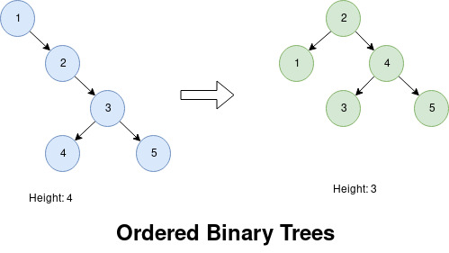
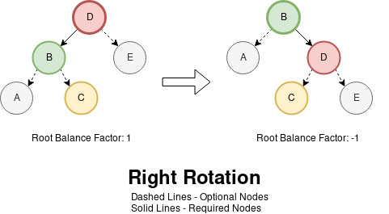
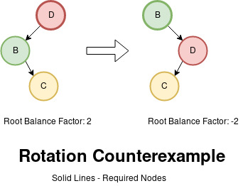
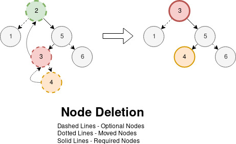

From<Elixir>, Into<Rust>
I loved learning the Elixir language and how its pragmatic supervision trees and process model taught me the value fault tolerance as a quality of code than of infrastructure. Having safety and failure recovery as an idiomatic culture and mindset of the language made me a better thinker and developer. As a personal preference then in selecting new languages to learn, I look for potentially new perspectives and insights that it ascribes to its pilgrims. In general, a good learning curve is a good indicator since it has much to teach.
Another language to learn that I believe is worth learning is Rust, a system programming language with a strong culture of memory safety. Its pervasive model of ownership and lifetimes alongside its demanding yet helpful compiler makes compiling code both a challenge and thrill. Aside from the higher learning curve, the absence of a garbage collector and virtual machine while proclaiming safety and performance in the face of concurrency is boldly insane. If I do invest, I expect to be more acute about memory issues and be more confident with algorithms.
After reading the main online book, the best way to understand a language for me is by writing code with a project. Since Rust is a safe alternative to the C language, I want to revisit the data structures and algorithms that I avoided because of tricky pointer management. In starting with linked lists, I stumbled across Too Many Linked List online book which was godsend. Reading it next, I want to step it up and implement a tricky data structure that had interesting mechanics to prove my understanding: AVL Trees.
To understand my intent to go back to the basics, I scoffed at C for
being too unsafe relative to Java's automatic memory management during
my teenage years. What foolish thoughts. Nonetheless, it pushed me
away from learning lower level algorithms which I thought of a hole in
my knowledge for years. With this regret, I ran cargo new --lib
avl_tree_set_rs.
After three weeks of struggling and tangents, I successfully wrote it with green tests. I found my trial a rigorous yet enlightening learning experience. Despite all the resistance and confusion from the compiler, I trust that as long as it compiles, my code and more importantly I feel safe, a similar feeling in Haskell. In this article, indulge me in my experience of implementing a self-balancing binary tree in Rust as a learning project. Hopefully, this is worth your time, helpful or entertaining. So what does it take to implement an AVL Tree in Rust?
(Source code for this article can be found here.)
REQUIREMENT:: This article assumes a rustc version of at least
1.38 for the non-lexical lifetimes if you want to compile or follow
the code.
CAVEAT: This is not a tutorial on Rust. I assume you have read the
book yourself and somewhat familiar with binary trees or sets.
Although my writing may not be technically precise, I want to focus on
discussing Rust from a newcomer's perspective. I do my best to link
relevant sections from the book to help me explain syntax and
concepts, so do visit them if you need to refresh yourself. You can
also try running rustup doc --std that opens a local copy of the
standard documentation. I found it quite helpful and convenient in
understanding functions and methods. If I make any incriminating
errors in terminology or code, do file an issue in the article's
repository, so we can rectify it and my thanks.
UPDATE 2019-12-18: Credits to jbj for filing a PR in rewriting
take and insert without using unsafe by using recursion.
AVL Trees
As a short discussion, ordered binary trees are good at searching values. As more values expand the tree, it becomes less efficient proportional to its height. Thus, rearranging nodes that minimize height maintains lookup efficiency.

To answer that issue, self-balancing trees balance themselves after every node insertion and deletion. Different variants such Black-Red Trees, Splay Trees and B-Trees are available each with their own strategy. I choose AVL trees for its conceptually simple left and right rotations as its balancing strategy while proving a challenge in Rust because of the pointers that dance in those rotations.
Implementing recursive data structures like trees and graphs in Rust are not trivial because of its ownership model and potential circular references. Specially in insertion and deletion, swapping nodes and values safely and correctly while obeying the rules is tricky itself. Aside from those and some mangling of lifetime variables, we have a modern C language with familiar functional programming concepts at our disposal . Despite the uncertainty, tackling this classic structure with modern ideas makes it feel approachable.
For this project, we will build our AVL tree as a set. To understand idiomatic language design, we will follow and implement methods from the ordered tree set of the standard collection: std::collections::BTreeSet. As much as I would implement every relevant method, the focus of this article is inserting and deleting values from our set that we will discuss in three major sections: insertion, balancing and deletion.
Since this article is long, feel free to stop and come back anytime. Below are links to major sections each with their own links to their subsections:
- Insertion
- Rebalancing
- Deletion
- Beyond Parity (Optional)
- Reflecting On Rust
Insertion
To begin our journey, we will implement the insertion (.insert)
method to populate our set and test the values with an iterator
(.iter) method. Since implementing balancing strategy is challenging
upfront, we will implement it after this to have a working feedback
cycle and momentum.
Data Types
What is the design of our tree structure? With some hint from this chapter, we will use a recursive tree design:
#[derive(Debug, PartialEq, Clone)] struct AvlNode<T: Ord> { value: T, left: AvlTree<T>, right: AvlTree<T>, } type AvlTree<T> = Option<Box<AvlNode<T>>>; // What is Box? #[derive(Debug, PartialEq, Clone)] struct AvlTreeSet<T: Ord> { root: AvlTree<T>, } impl<T: Ord> AvlTreeSet<T> { fn new() -> Self { Self { root: None } } }
To explain some Rust specific details, our set library must take
any value that can be ordered, so we declare a generic type that
implements the ordering (std::cmp::Ord) trait (T: Ord). The main
struct AvlNode expresses a binary tree node that stores a value and
possibly has a left and right subtree where the child value is less
than and greater than respectively this node's stored value. The
newtype/type alias AvlTree represents either an empty value/tree or
a node which completes the recursive definition by using the
std::option::Option type. Finally, AvlTreeSet provides the
interface over the underlying data structure. Optionally, we also
derive some useful traits such as debugging via dbg!
(std::fmt::Debug), allow equality checks == (std::cmp::PartialEq)
and cloning capabilities for testing with .clone
(std::clone::Clone).
This design is similar in other languages like Haskell and Java, so we have not strayed far from the path. The snippet below shows how to initialize this:
let mut tree = Some(Box::new(AvlNode { value: 2, left: Some(Box::new(AvlNode { value: 1, left: None, right: None, })), right: Some(Box::new(AvlNode { value: 5, left: Some(Box::new(AvlNode { value: 3, left: None, right: Some(Box::new(AvlNode { value: 4, left: None, right: None, })), })), right: None, })), });
As cumbersome it is to initialize, we encounter our first memory
design consideration for recursive structures: std::boxed::Box.
Generally, structs or data types should have a known or constant size
for memory allocation. Every primitive type has a fixed size such as
1 byte for bool and u8 and 4 bytes for i32 or char. While
complex structures can be thought of as a sum of its parts, the
compiler cannot infer the known size for recursive structure at
compile time since the size is proportional to the level of nesting
required at runtime. To resolve this constant and dynamic memory
conundrum, since references and pointers also have the same and fixed
size, we wrap the recursive data with a heap allocated pointer which
stores and points to the data in the heap that satisfies the size
constraint and why we wrap each child node with Box::new.
This is unlike other languages where you could use the types without such consideration. Initially awkward, I find it fascinating that Rust requires some forethought to also think about how data is stored (Stack or Heap) at a safe and high level. That this enforced compiler discipline gives me the impression that code in this language is more likely to be planned and deliberate. Definitions done, we proceed with the main method.
Insert Method
Parity: BTreeSet::insert
To insert new values our tree set, we follow a standard procedure for binary trees:
- Starting from the root node or with a current node
- Move to the left node if the value is less than the current node, right if greater, and stop if equal
- Do this until you an empty node and insert the value
Translating this into Rust:
use std::cmp::Ordering; impl<T: Ord> AvlTreeSet<T> { fn insert(&mut self, value: T) -> bool { let mut current_tree = &mut self.root; // 1. Starting from the root node or with a current node while let Some(current_node) = current_tree { // 2. Move to the left node if the value is less than the current node, // right if greater, and stop if equal match current_node.value.cmp(&value) { Ordering::Less => current_tree = &mut current_node.right, Ordering::Equal => { return false; } Ordering::Greater => current_tree = &mut current_node.left, } } // 3. Do this until you an empty node and insert the value *current_tree = Some(Box::new(AvlNode { value, left: None, right: None, })); true } }
With pattern matching, it is easily done and also handles the empty tree case. The snippet below shows how to use it:
let mut set = AvlTreeSet::new(); assert!(set.insert(1)); // Insert new value assert!(!set.insert(1)); // Should not insert existing value assert!(set.insert(2)); // Insert another new value assert_eq!( // Checking the tree structure set.root, Some(Box::new(AvlNode { value: 1, left: None, right: Some(Box::new(AvlNode { value: 2, left: None, right: None })), })) );
How do we test .insert? We could implement BTreeSet::contains to
test if the inserted value is present; however, where it is inserted
also matters. If the node is inserted in the left instead of the
right, the order of the set would be incorrect. So we need to test it
structurally, and we can do that with an tree iterator which we will
implement next.
Iterator
Parity: BTreeSet::iter
For our ordered set, we want the iterator to process the data in ascending order, so we will use an in-order traversal or left-node-right approach. Since this is lower level language, we are using a loop instead of a recursive function to express the algorithm:
- Starting from the root node or with a current node
- If the node has a left subtree, store this node in a stack of unemitted nodes, then move to the left node and repeat this step
- Otherwise, emit the value
- Next if the node has a right subtree, then move to the right node and repeat from step 2
- If neither and there is an unemitted node in the stack, pop that and emit that node's value and repeat step 3 with that right node
- If no more unemitted nodes remain, stop
The common pattern is to implement a .iter method that will return
a struct that implements std::iter::Iterator and emits references to
the underlying tree. Before working on the code, we need to define
the struct to hold the iterator state that holds the previously
traversed nodes and the current tree:
#[derive(Debug)] struct AvlTreeSetIter<'a, T: Ord> { prev_nodes: Vec<&'a AvlNode<T>>, current_tree: &'a AvlTree<T>, } impl<'a, T: 'a + Ord> Iterator for AvlTreeSetIter<'a, T> { type Item = &'a T; fn next(&mut self) -> Option<Self::Item> { unimplemented!() } } // Addition of lifetime parameter for the set impl<'a, T: 'a + Ord> AvlTreeSet<T> { fn iter(&'a self) -> AvlTreeSetIter<'a, T> { AvlTreeSetIter { prev_nodes: Vec::new(), current_tree: &self.root, } } }
Aside from treating std::vec::Vec as a stack, we need to discuss
lifetime for parameters. This is one of Rust concepts that is
conceptually easy but understanding the syntax requires practice.
Fundamentally, every reference has a lifetime scope before being
dropped that must not outlive the owner to avoid dangling
references. Our iterator will not mutate or acquire ownership of the
tree, instead it needs a reference to traverse it and that the
iterator lives as long as the set itself. We express this by
introducing a lifetime parameter('a) on each struct that is
connected through the .iter. We also specify that emitted reference
values also live as long as the iterator itself through the
associated type (Item). Even with all this extra typing for
lifetimes, the compiler is quite helpful in ensuring that the
iterator safely references the set.
Another interesting discipline of Rust in thinking about the lifetime requirements of references as part of the design. My personal learning experience is to add explicit annotation for each reference, figure out their scope and then remove it if unnecessary as with lifetime elision. As much as possible, I let the Rust compiler infer as much and stepping in when needed.
Going back, when implementing Iterator::next method, we return
Some(value) when we want to emit value and return None if we
have no more. With this in mind, we can proceed:
fn next(&mut self) -> Option<Self::Item> { loop { match *self.current_tree { None => match self.prev_nodes.pop() { None => { return None; } Some(ref prev_node) => { self.current_tree = &prev_node.right; return Some(&prev_node.value); } }, Some(ref current_node) => { if current_node.left.is_some() { self.prev_nodes.push(¤t_node); self.current_tree = ¤t_node.left; continue; } if current_node.right.is_some() { self.current_tree = ¤t_node.right; return Some(¤t_node.value); } self.current_tree = &None; return Some(¤t_node.value); } } } }
Although a bit longer, it just requires a little work. One thing I find interesting here is that pattern matching also has move semantics via ref keyword. Quite intriguing where borrow mechanics pervade even the familiar pattern matching. To show our code works, we insert a range backwards (Iterator::rev) and expect it to come up in ascending order:
let mut set = AvlTreeSet::new(); for i in (1..4 as usize).rev() { set.insert(i); } let mut iter = set.iter(); assert_eq!(iter.next(), Some(&1)); assert_eq!(iter.next(), Some(&2)); assert_eq!(iter.next(), Some(&3)); assert_eq!(iter.next(), None);
Can we test .iter without .insert? If we create a different
constructor for our set that takes a collection or iterator and build
nodes around it, we certainly could; however, it requires that we
arrange them in a balanced manner which is beyond our current
capacity. Testing both .iter and .insert is the simplest way to
go.
Testing Insert
To test .iter and .insert together, we do the following:
- Create a random list
- Create an empty AVL tree and BTree
- For each element in the list, insert it to both tree
- Both AVL and BTree iterator should be equal item per item
For generating random data, we will use quickcheck as a generator and our testing style: property based testing. Instead of testing just correct input and output like with TDD and BDD, we focus on proving properties or statements are correct for every possible value. For example with odd and even integers, adding two even or odd integers will always be even while adding an even and odd integer together will always be odd. For testing abstract data types with little or no state, testing structural properties is easier than asserting the structure itself.
Our first statement/property is that our AVL tree and BTree have equal iterators since it exercises the whole structure and order. To assist in testing, we employ rust-itertools to test iterator equality via itertools::equal since it is better than using Iterator::zip and assert_eq! in a for loop. We also implement the convenience trait, std::iter::IntoIterator, to use IntoIterator::collect method to easily transforms iterators into other collections as shown below:
impl<T: Ord> FromIterator<T> for AvlTreeSet<T> { fn from_iter<I: IntoIterator<Item = T>>(iter: I) -> Self { let mut set = Self::new(); for i in iter { set.insert(i); } set } } // The power of IntoIterator let vec = (1..10 as u8).collect::<Vec<_>>(); let avl = (1..10 as u8).collect::<AvlTreeSet<_>>(); let btree = (1..10 as u8).collect::<BTreeSet<_>>();
With all this foundation, creating a test for the iterator is precise:
#[cfg(test)] mod properties { use super::*; use std::collections::BTreeSet; #[quickcheck] // 1. Create a random list fn iterator_parity(mut xs: Vec<usize>) -> bool { // 2. Create an empty AVL tree and BTree // 3. For each element in the list, insert it to both tree let avl_set = xs.iter().cloned().collect::<AvlTreeSet<_>>(); let btree_set = xs.iter().cloned().collect::<BTreeSet<_>>(); // 4. Both AVL and BTree iterator should be equal item per item equal(avl_set.iter(), btree_set.iter()) } }
Instead of #[test], we use #[quickcheck] macro to indicate it is
a property based test. The actual mechanics of this style is that it
will generate a random value each argument in the function, run the
test and repeat it around 10,000 in an attempt to find a value that
returns false or breaks the test. In this case, the test creates
random usize lists and check the iterators as described above. The
generated lists are also not sorted and not unique that challenges
order and uniqueness. Until a counterexample is found, we can assume
it correct.
We also check insert parity for completion:
#[quickcheck] fn insert_parity(mut btree_set: BTreeSet<u8>, x: u8) -> bool { let mut avl_set = btree_set.iter().cloned().collect::<AvlTreeSet<_>>(); avl_set.insert(x) == btree_set.insert(x) }
Given an equal AVL and BTree set, .insert should be the same for
every value. We can let quickcheck generate a random BTreeSet as
well and copy it in the same manner. Since x is also random, it is
either in the created sets or not that creates a positive and
negative case for inserting duplicates. With both tests written, we
run the tests with cargo test:
Compiling avl_tree_set_rs v0.1.0 (/home/nobody/avl_tree_set_rs)
Finished dev [unoptimized + debuginfo] target(s) in 0.91s
Running target/debug/deps/avl_tree_set_rs-5f93a12c976aa84b
running 2 tests
test set::properties::iterator_parity ... ok
test set::properties::insert_parity ... ok
We now have a working tree set. Of course, since we did not rebalance the tree, we only crafted a standard binary tree but it is a start.
Reflection
Working with Rust in this first section is not bad. Going back to a static type system is reinvigorating. I really liked that structs, pattern matching and type classes were included in the language, so I had no problem there. Typing and understanding lifetime annotations is one thing that made Rust different. Understanding the wide array of traits and types itself is not trivial, so it is challenging how their lifetime are factored in as well.
As a beginner, taking some time to look at the various traits and
types and their implementation made it click for me. Having the
documentation at the ready with rustup doc --std was great tooling.
Thankfully, we only require the basic concepts so it is more a
learning experience. So far, Rust does play like a low-level modern
language with some of the best modern features I value.
Rebalancing
With a working binary tree, we apply the rebalancing strategy by
deciding how to implement height and node rotation. We then integrate
it back to .insert and update our test.
Balance Factor And Height
Given a node, it has a balance factor that is the height of the
left tree minus the height of the right tree. The idea is that when
the balance factor grows to 2 or -2, a rotation of nodes or
transfer of nodes from one side to the other will fix the balance.
Starting with this definition, implementing the balance factor for
nodes is direct with some type truncation safety:
impl<'a, T: 'a + Ord> AvlNode<T> { fn left_height(&self) -> usize { self.left.as_ref().map_or(0, |left| left.height()) } fn right_height(&self) -> usize { self.right.as_ref().map_or(0, |right| right.height()) } pub fn balance_factor(&self) -> i8 { let left_height = self.left_height(); let right_height = self.right_height(); if left_height >= right_height { (left_height - right_height) as i8 } else { -((right_height - left_height) as i8) } } }
Since our type uses usize, we need to consider subtraction
overflow. Assuming the tree is balanced, the balance factor can only
be from -2 to 2, so we can also use improve the return type from
isize to i8 as a tiny optimization. However, if our tree does not
update height properly, we will have overflow from the smaller
datatype as a consequence. For the pragmatic, directly subtracting
the left and right height and using isize is valid but still holds
as a gentle reminder of what unsigned integers are and its design
impact.
Anyway, we need to define a height field that is defined recursively as the larger height of the left or right subtree plus one and empty trees have an empty height of zero. Word-for-word, it is written as:
use std::cmp::max; fn height(&self) -> usize { 1 + max( self.left.as_ref().map_or(0, |node| node.height()), self.right.as_ref().map_or(0, |node| node.height()), ) }
Use Option::map_or when you need map and unwrap with a default in one go. However, updating ancestor nodes is expensive or inefficient when it traverses the same node multiple times, so we turn this into a field to cache the computation instead. Updating our definition of node:
struct AvlNode<T: Ord> { value: T, left: AvlTree<T>, right: AvlTree<T>, // New field height: usize, } impl<'a, T: 'a + Ord> AvlNode<T> { fn update_height(&mut self) { self.height = 1 + max(self.left_height(), self.right_height()); } }
After inserting or deleting a node, we need to traverse the ancestor nodes to update their height as a trade-off. Definitions done, implementing rotations was my first real struggle in Rust.
Unsafe Decision
How do we traverse upwards in our tree after every node insertion? A quick solution is to add a mutable reference to the parent node and use that to traverse until the root like so:
#[derive(Debug, PartialEq)] struct AvlNode<'a, T: Ord> { value: T, left: AvlTree<'a, T>, // Sad, extra annotations required right: AvlTree<'a, T>, height: usize, // New field parent_node: Option<&'a mut AvlNode<'a, T>>, } impl<'a, T: 'a + Ord> AvlNode<'a, T> { fn update_ancestors_height(&mut self) { self.update_height(); let mut current_node = self; while let Some(parent_node) = current_node.parent_node { parent_node.update_height(); current_node = parent_node; } } }
However, this creates a cyclic reference between parent and child
which is dangerous and discouraged in Rust. Personally, it also
makes the design dirtier that requiring a reference only for
traversing upwards on insert and delete operations seems overkill.
Going back to .insert, we can track them with a stack instead via
Vec::push mechanics:
fn insert(&mut self, value: T) -> bool { let mut prev_nodes = Vec::<&mut AvlNode<T>>::new(); while let Some(current_node) = current_tree { prev_nodes.push(current_node); // match ... } // snip // Traversing a list as a stack needs to be reversed via .rev first for node in prev_nodes.into_iter().rev() { node.update_height(); } true }
The problem here is that current_node is mutable borrowed twice:
one for a mutable left or right child node and one for traversed
stack/vector. I would argue that the mutability of the tracking nodes
is safe since it is used after the insert mutation is done. Crawling
the web for idiomatic solutions, the suggested strategy is to use the
combination of a reference counted pointer and interior mutable cell
or Rc<RefCell<T>> pattern to allow multiple mutable references. I
initially thought I could use this just in the function itself
without changing the definition of the node but I could not:
use std::rc::Rc; use std::cell::RefCell; type AvlTree<T> = Option<Rc<RefCell<AvlNode<T>>>>;
To use them as intended, we would need to own the data we are using;
however that is not possible since we are behind a mutable reference,
&mut self. Even if I could make the code work, the fact that I had
to change the types and include reference counting complicates the
design needlessly just to retrace the nodes. Up to this point, I find
Rust's strictness comforting in spite of my struggle; however, I
feel that I need to loosen up the restriction a bit to avoid
unnecessary complexity. In this case, we want to allow one secondary
mutable reference after insertion and doing this requires Unsafe
Rust. Unsafe Rust allows us to ignore borrowing rules for
mutability as specified in this section of the book. Using raw
pointers allows our implementation to be uncomplicated:
fn insert(&mut self, value: T) -> bool { let mut prev_ptrs = Vec::<*mut AvlNode<T>>::new(); while let Some(current_node) = current_tree { prev_ptrs.push(&mut **current_node); // Converting a mutable reference to a pointer // ... match ... } // ... insert ... for node_ptr in prev_ptrs.into_iter().rev() { let node = unsafe { &mut *node_ptr }; // Converting a mutable pointer back to a reference node.update_height(); } true }
The arcane magic of unsafe is better explained in the Rustonomicon
which I plan to read after writing this. Since we told Rust to
trust us, we need to guarantee our function is safe. The most visible
angle is the one using unsafe or the raw pointers themselves. The
mutable method, .update_height, only requires that its children
have the correct height before updating itself. As an anecdote, I
forgot to reverse the list before iterating (since push operation
append at the end) and caused incorrect node heights because the
parents were updated before the children. With this possibility, we
also need to test the height property.
Height Testing
Given any AVL tree set, each node's height is one more than the
larger height of the left or right subtree. To make testing easier,
we can do two short things. First, instead of pattern matching the
structure, we can refactor .iter to emit the nodes instead of their
values .node_iter:
impl<'a, T: 'a + Ord> AvlTreeSet<T> { // Using impl Traits fn iter(&'a self) -> impl Iterator<Item = &'a T> + 'a { self.node_iter().map(|node| &node.value) } fn node_iter(&'a self) -> impl Iterator<Item = &'a AvlNode<T>> + 'a { AvlTreeSetNodeIter { prev_nodes: Vec::default(), current_tree: &self.root, } } }
As an aside, I suggest learning impl Traits that allows you to
return an abstract trait type instead of the concrete type as in
polymorphism. Using that, we can implement generic iterator adapters
for .iter that maps over .node_iter. Without it, creating
abstractions on top of another becomes a noisy type fest:
use core::iter::Map; fn iter(&'a self) -> Map<AvlTreeSetNodeIter<'a, T>, fn(&'a AvlNode<T>) -> &T> { self.node_iter().map(|node| &node.value) } fn node_iter(&'a self) -> AvlTreeSetNodeIter<'a, T> { AvlTreeSetNodeIter { prev_nodes: Vec::default(), current_tree: &self.root, } }
Going back, the new AvlTreeSetNodeIter is a copied version of the
original iterator with Some(¤t_node.value) replaced to
Some(¤t_node). Moving on the second item, instead of creating
the sets through .collect method; we can also have it generated by
implementing the Arbitrary trait ourselves:
use quickcheck::{Arbitrary, Gen}; // Refit and copied from quickcheck // https://docs.rs/quickcheck/0.8.5/src/quickcheck/arbitrary.rs.html#385-395 impl<T: Arbitrary + Ord> Arbitrary for AvlTreeSet<T> { fn arbitrary<G: Gen>(g: &mut G) -> Self { let vec: Vec<T> = Arbitrary::arbitrary(g); vec.into_iter().collect() } fn shrink(&self) -> Box<dyn Iterator<Item = Self>> { let vec: Vec<T> = self.iter().cloned().collect(); Box::new(vec.shrink().map(|v| v.into_iter().collect::<Self>())) } }
Putting those two together, we have another simple test:
use std::cmp::max; use itertools::all; #[quickcheck] fn node_height(set: AvlTreeSet<u16>) -> bool { all(set.node_iter(), |node| { node.height == 1 + max(node.left_height(), node.right_height()) }) }
Another succinct test that .update_height correctly updates the
child all the way up to the root and that our use of unsafe is
truly safe. Whether you agree with my use of unsafe, I learned a
certain reverence in asking permission to use dangerous features and
heightened responsibility in upholding the law that reminds me of
Haskell's IO boundaries. Nonetheless, we can now tackle node
rotation.
Node Rotation
After inserting a node in a balanced AVL tree, it becomes
imbalanced when a node has a left and right subtree height
difference of 2 or -2. To correct this, we move nodes around while
preserving order. Visualizing the operation for rotating nodes to the
right:

Given a node, the idea is to promote the left child as the root and
demote the old root as a right child. While retaining other node
relationships, the orphaned left-right child of the old root is now
the right-left child of the new root. Those two movements constitute
the right rotation of nodes. As a general observation, moving nodes
from one side to the other should change the balance factor. Based on
the diagram above, we can say it changes by 2 perhaps. We'll verify
this observation later.
Implementing the rotation took me a long time to do with two primary
constraints. First was to avoid using unsafe again. Another is to
avoid create another node or heap allocated pointer via Box::new to
be memory efficient. After several attempts, I came up with this safe
implementation of right rotation:
use std::mem::{replace, swap}; impl<'a, T: 'a + Ord> AvlNode<T> { fn rotate_right(&mut self) -> bool { if self.left.is_none() { return false; } // 1. Take nodes A and C let left_node = self.left.as_mut().unwrap(); let left_right_tree = left_node.right.take(); let left_left_tree = left_node.left.take(); // 2. Link A node to left node let mut new_right_tree = replace(&mut self.left, left_left_tree); // 3. Swap B and D node value to avoid moving the root swap(&mut self.value, &mut new_right_tree.as_mut().unwrap().value); // 4. Take E node let right_tree = self.right.take(); // 5. Link C and E nodes to swapped D node let new_right_node = new_right_tree.as_mut().unwrap(); new_right_node.left = left_right_tree; new_right_node.right = right_tree; // 6. Link swapped D node to root right node self.right = new_right_tree; if let Some(node) = self.right.as_mut() { node.update_height(); } self.update_height(); true } }
By carefully using std::mem::swap and std::mem::replace, we avoid creating nodes by replacing the value and links of an existing node instead. The main idea is about taking nodes from the left side and placing them on the right carefully. Referring to the rotation diagram while stepping through the code might help. After rotating, we also need to update the heights of the right tree and the node itself since they had new nodes. One minor thing is that we also return a flag to indicate that the operation was executed or not for our tests later. To compare and contrast, my first version is indeed shorter yet memory inefficient:
pub fn rotate_right(&mut self) -> bool { // snip let left_right_tree = self.left.as_mut().unwrap().right.take(); let new_root = *replace(&mut self.left, left_right_tree).unwrap(); let old_root = replace(self, new_root); replace(&mut self.right, Some(Box::new(old_root))); // New pointer created here // snip }
Assuming it is correct in either version, implementing the left
rotation is a bit of cheat by swapping every left with right text
in the function since they are symmetrical. To say that we have
working and safe rotations after days of working back and forth is
nothing short of bliss. As we did before, we need to prove it works.
Rotation Testing
We have two statements to test about node rotation: rotations should preserve order and adjust the balance factor. With everything previously setup, we can test the first statement directly:
use quickcheck::TestResult; #[quickcheck] fn rotate_right_preserves_order(btree: BTreeSet<u8>) -> TestResult { let mut set = btree.iter().cloned().collect::<AvlTreeSet<_>>(); if !set.root.is_some() { return TestResult::discard(); } if !set.root.as_mut().unwrap().rotate_right() { return TestResult::discard(); } TestResult::from_bool(equal(set.iter(), btree.iter())) }
Given a BTree, we clone that to an AVL and right rotate the root node and check if the resulting iterators still matches in order and value. We also want to ignore empty trees and nodes that cannot not be rotated since they do not add value. For that, we use the discard test mechanics of quickcheck with a quickcheck::TestResult output instead. If a test is discarded, a new test sample is created instead of ignoring it that would have eaten the maximum number of tests. Same tactic applies to writing the left rotation.
First statement down, we now check if right rotation does tilt the
balance factor say by 2:
#[quickcheck] fn rotate_right_tils_balance_factor(xs: Vec<u32>) -> TestResult { let mut set = xs.iter().cloned().collect::<AvlTreeSet<_>>(); if !set.root.is_some() { return TestResult::discard(); } let root_node = set.root.as_mut().unwrap(); let balance_factor = root_node.balance_factor(); if !root_node.rotate_right() { return TestResult::discard(); } let tilted_factor = root_node.balance_factor(); TestResult::from_bool(balance_factor - tilted_factor == 2) }
Running just this test with cargo test
rotate_right_tilts_balance_factor, this test fails on the list [2,
0, 1]:
Finished dev [unoptimized + debuginfo] target(s) in 0.01s
Running target/debug/deps/avl_tree_set-ac5259255f5174fd
running 1 test
thread 'set::properties::rotate_right_tilts_balance_factor' panicked at '[quickcheck] TEST FAILED. Arguments: ([2, 0, 1])',
/* More errors */
Visualizing this counterexample:

Given this diagram, the balance factor is changed from 2 to -2
that has a difference of 4 that fails the test. Even accommodating
that, the next counterexample is [2, 0, 1, 3] where the balance
factor is 1 turned to -2 with a difference of 3. With
subsequent exploration, the difference is always at least 2 but the
upper bound is unknown. This is where property based testing is
meaningful in expanding our empirical observation. Nonetheless, the
tilt still exists that proves that the rotation works although
weakly. We then update the condition to test a difference of at least
2 to pass and apply a similar treatment to writing the left
rotation test.
To connect these two rotations in one property, what can we say about those two operations when applied together? Can we say they are inverse operations that a right rotation undoes a left rotation or vice-versa like with multiplication and division? Again, easily verified:
#[quickcheck] fn rotate_left_and_rotate_left_identity(set: AvlTreeSet<u8>) -> TestResult { if set.root.is_none() { return TestResult::discard(); } let mut rotated_set = set.clone(); let root_node = rotated_set.root.as_mut().unwrap(); if root_node.rotate_left() { root_node.rotate_right(); } else { root_node.rotate_right(); root_node.rotate_left(); } TestResult::from_bool(rotated_set == set) }
Given a set, we clone that and rotate left then right or whichever applies first, then check if it is the same structure. Running the test proves it is valid since no breaking example can be found:
Compiling avl_tree_set v0.1.0 (/home/nobody/avl_tree_set_rs)
Finished dev [unoptimized + debuginfo] target(s) in 0.27s
Running target/debug/deps/avl_tree_set-ac5259255f5174fd
running 5 tests
test set::properties::rotate_left_and_rotate_left_identity ... ok
test set::properties::rotate_left_tilts_balance_factor ... ok
test set::properties::rotate_right_tilts_balance_factor ... ok
test set::properties::rotate_left_preserves_order ... ok
test set::properties::rotate_right_preserves_order ... ok
/* Omitted other results */
With confidence from those supporting statements, we are now ready to finish our insert method.
Rebalancing Insert
If we have an imbalanced node, then wouldn't one correct rotation restore balance? It is a good first intuition but our small counterexample on the tilt property disproves that. However, we can apply another rotation to a child node before applying the main rotation and it is enough to work. You can find a mathematical proof of induction here if you are interested. Theory aside, the algorithm can be thought of as branching paths:
- Give a root node, if the balance factor is
2(left heavy), we inspect the left node. - If the left node has a balance factor of
1(left heavy), we just right rotate on the root node. - Otherwise, we left rotate this inner left node and right rotate the root node.
- Going back to the root node, if the balance factor is instead
-2(right heavy), we inspect the right node. - If the right node has a balance factor of
-1(right heavy), we just left rotate the root node. - Otherwise, we right rotate the inner right node and left rotate the root node.
Translating this into code is rather direct with pattern matching:
impl<'a, T: 'a + Ord> AvlNode<T> { fn rebalance(&mut self) -> bool { match self.balance_factor() { -2 => { // Root is right heavy let right_node = self.right.as_mut().unwrap(); // Inner node is left heavy if right_node.balance_factor() == 1 { right_node.rotate_right(); } self.rotate_left(); true } 2 => { // Root is left heavy let left_node = self.left.as_mut().unwrap(); // Inner node is right heavy if left_node.balance_factor() == -1 { left_node.rotate_left(); } self.rotate_right(); true } _ => false, } } }
We directly integrate this method back to .insert as planned:
fn insert(&mut self, value: T) -> bool { // snip for node_ptr in prev_ptrs.into_iter().rev() { let node = unsafe { &mut *node_ptr }; node.update_height(); node.rebalance(); // Right here } true }
To test the rebalancing property, we assert that every node should not be imbalanced which is similar to the height test:
#[quickcheck] fn balanced_nodes(set: AvlTreeSet<u16>) -> bool { all(set.node_iter(), |node| node.balance_factor().abs() < 2) }
Running this and all prior test specially with the height and iterator property proves that our tree is balanced after every insert:
Compiling avl_tree_set v0.1.0 (/home/nobody/avl_tree_set_rs) Finished dev [unoptimized + debuginfo] target(s) in 0.27s Running target/debug/deps/avl_tree_set-ac5259255f5174fd running 3 tests test set::properties::balanced_nodes ... ok test set::properties::node_height ... ok test set::properties::iterator_parity ... ok /* Omitting other tests */
We now have a self-balancing tree and can now proclaim victory.
Reflection
This was a challenging section. In particular with rotation, it was
hard to negotiate with the compiler how to move the nodes correctly.
In my darkest hour, I was truly tempted to use unsafe to move the
pointers directly (if I could) as C code seems so deceptively easy;
however, I would increase the error margin/surface of the design.
This problem was less about writing and technicalities but more about
understanding that requires patience and rigor. After this, I stopped
resisting the compiler and started to accept it.
Deletion
After all the struggle with .insert, the deletion method, .take,
is surprisingly the harder of the two methods. When deleting nodes, we
have to handle three cases for the deleted node to maintain the tree
structure: no children, one child and two children. This section is a
culmination of all the techniques.
Delete Method
Parity: BTreeSet::take
If you noticed Option::take when rotating nodes, it returns the owned
value and internally replaced by a None value. For our tree, our
.take method follows the same convention. Here is the whole
procedure to delete a node:
- Starting from the root node or with a current node
- Move to the left node if the value is less than the current node, right if greater
- Do this until you have a node equal to that value, otherwise stop
- Delete that node and return the value
- If the deleted node has no children, stop
- If the deleted node has one child, substitute that child to the removed node
- If the deleted node has two children, substitute the deleted node with the leftmost child of the right subtree and link the orphaned left child to the left child of this new node
These steps are short to write but are deceptively tricky but the
first few are done in the same manner as we did with .insert:
fn take(&mut self, value: &T) -> Option<T> { let mut prev_ptrs = Vec::<*mut AvlNode<T>>::new(); // 1. Starting from the root node or with a current node let mut current_tree = &mut self.root; let mut target_value = None; while let Some(current_node) = current_tree { // 2. Move to the left node if the value is less than the current node, // right if greater match current_node.value.cmp(&value) { Ordering::Less => { prev_ptrs.push(&mut **current_node); current_tree = &mut current_node.right; } Ordering::Equal => { // 3a. Do this until you have a node equal to that value, ... target_value = Some(&mut **current_node); break; } Ordering::Greater => { prev_ptrs.push(&mut **current_node); current_tree = &mut current_node.left; } }; } // 3b. ... otherwise stop if target_value.as_ref().is_none() { return None; } let target_node = target_value.unwrap(); // 4. Delete that node and return the value let mut taken_value = ???; // Retrace the path and update them accordingly for node_ptr in prev_ptrs.into_iter().rev() { let node = unsafe { &mut *node_ptr }; node.update_height(); node.rebalance(); } Some(taken_value) }
This is the .insert method with some modifications. We need the
node before .insert stops, so the target_value captures that
idea. It is also wrapped in an Option to see check if a node is
found and stop otherwise. Also, we use taken_value as the return
value after deleting the node. Before exiting, we make sure the
tracked nodes are updated before we leave.
To emphasize, deleting or relocating nodes is a tricky operation
since it potentially moves many nodes. We exercise care as we handle
each case and consider height and balance if needed. Failing to
update nodes correctly will lead to subtle memory issues such as
mentioned in .balance_factor and dropped nodes. We naturally start
with the safer case of zero or one child for the deleted node.
Zero Or One Child
The case of deleting an empty node is about detaching the target node. With one child either left or right, we still delete the node and promote that child in its place. Weirdly, the case of deleting one child is easier than deleting no child:
fn take(&mut self, value: &T) -> Option<T> { // snip // Deleting the node here let taken_value = if target_node.left.is_none() || target_node.right.is_none() { if let Some(left_node) = target_node.left.take() { replace(target_node, *left_node).value } else if let Some(right_node) = target_node.right.take() { replace(target_node, *right_node).value } else { // Deleting an no children } } else { unimplemented!() } // snip }
The tactic of the deleting node with replace allows us to get
ownership of the node that gives us ownership of the value we want
to return. Since a child tree was promoted, no height or rebalancing
is needed for the replaced node.
With the one child node, we can get a node and replace the deleted node with that. With no children, we cannot use the same tactic. Instead, we have to go the parent node and delete if from there:
if let Some(left_node) = target_node.left.take() { // snip } else if let Some(right_node) = target_node.right.take() { // snip } else { // 1a. Get parent node if let Some(prev_ptr) = prev_ptrs.pop() { let prev_node = unsafe { &mut *prev_ptr }; // 1b. Determine which node to remove: left or right node let inner_value = if let Some(ref left_node) = prev_node.left { if left_node.value == target_node.value { prev_node.left.take().unwrap().value } else { prev_node.right.take().unwrap().value } } else { prev_node.right.take().unwrap().value }; // 2. Update parent node prev_node.update_height(); prev_node.rebalance(); // 3. Return value inner_value } else { // 1c. ... otherwise it is the parent and take the root node self.root.take().unwrap().value } }
Given the parent node, we determine which left or right node to take by checking for equality once again. We could create an extra enum or flag to remember the path, but it is a minor trade-off than adding state. Either way, we take that node and returns its value; however, since the parent node had a child removed, we update it accordingly. Lastly, it is possible no previous nodes were traversed that implies it is an isolated root node to delete which is easily handled. Another case where pattern matching helps with illuminating edge cases. With some confidence in our reasoning, we handle the hard case of two children.
Two Children
For two children, we replace the deleted node with the node of the next value or the leftmost child of the right child of the deleted node:

Describing the algorithm:
- Starting with the right child of the target node
- Keep moving the current node to the left child until it has none
- Replace the target node value with the current node value
- Replace the current node with the right child if it has one
Applying all the prior techniques for this final challenge:
let taken_value = if target_node.left.is_none() || target_node.right.is_none() { // snip } else { let right_tree = &mut target_node.right; // 1. Starting with the right child of the target node let mut next_tree = right_tree; // We also keep track of the parent nodes to update the height let mut inner_ptrs = Vec::<*mut AvlNode<T>>::new(); // 2. Keep moving the current node to the left child until it has none while let Some(next_left_node) = next_tree { if next_left_node.left.is_some() { inner_ptrs.push(&mut **next_left_node); } next_tree = &mut next_left_node.left; } // We don't use next_tree but instead the tracked nodes as basis let parent_left_node = unsafe { &mut *inner_ptrs.pop().unwrap() }; let mut leftmost_node = parent_left_node.left.take().unwrap(); // 3. Replace the target node value with the current node value let inner_value = replace(&mut target_node.value, leftmost_node.value); // 4. Replace the current node with the right child if it has replace(&mut parent_left_node.left, leftmost_node.right.take()); // Updates the nodes in order parent_left_node.update_height(); parent_left_node.rebalance(); for node_ptr in inner_ptrs.into_iter().rev() { let node = unsafe { &mut *node_ptr }; node.update_height(); node.rebalance(); } target_node.update_height(); target_node.rebalance(); inner_value }
It is quite a mouthful and the last bit of complex code. It is like an inner delete based on the child right tree that follows the same conventions. After promoting a bottom node, we have an interesting path of nodes to update and balance: the parent of the leftmost child up to the originating target node. Stepping through the code should be straightforward although more complex.
For the astute reader, we have one final edge case as the code above
assumes that at least one tracked node always exist by the
declaration of parent_left_node that only happens when the direct
right node has no left child based on the diagram. In that simpler
yet similar case, we replace that node with the right child if has
any:
let right_tree = &mut target_node.right; if right_tree.as_ref().unwrap().left.is_none() { let mut right_node = right_tree.take().unwrap(); let inner_value = replace(&mut target_node.value, right_node.value); replace(&mut target_node.right, right_node.right.take()); target_node.update_height(); target_node.rebalance(); inner_value } else { // Previous case }
With that final edge case, the .take method is complete and ready
to test.
Deletion Testing
To test deletion, we need to test for existence that we do by finally implementing a BTreeSet::contains method. With everything done so far, this is a relief:
impl<'a, T: 'a + Ord> AvlTreeSet<T> { pub fn contains(&self, value: &T) -> bool { let mut current_tree = &self.root; while let Some(current_node) = current_tree { match current_node.value.cmp(&value) { Ordering::Less => { current_tree = ¤t_node.right; } Ordering::Equal => { return true; } Ordering::Greater => { current_tree = ¤t_node.left; } }; } false } }
Given an equal AVL and BTree set, .contains should be the same
for every value. Testing .contains will have a little twist. We
want to have a more defined positive and negative test cases, so when
cloning a list of numbers, we only include the even numbers as
positive cases and odd as negatives:
#[quickcheck] fn contains_parity(xs: Vec<isize>) -> bool { let evens = xs .iter() .cloned() .filter(|x| x % 2 == 0) .collect::<Vec<_>>(); let avl_set = evens.iter().cloned().collect::<AvlTreeSet<_>>(); let btree_set = evens.iter().cloned().collect::<BTreeSet<_>>(); all(xs.iter(), |x| avl_set.contains(x) == btree_set.contains(x)) }
As long as we have a subset of data, it is valid. Also we do not need
to filter test cases so we revert back to the familiar test template.
Assuming the test works, we use the same template of positive and
negative testing for .take as well. Thanks to the previous
sections, we establish our tree has three core properties:
- Ordering
- Height
- Balanced
If we prove that each property holds after several deletions, it shows our tree is balanced and correct. Writing a separate test for each one might be more verbose, but it makes failing properties easier to reason about.
Given an equal AVL and BTree set, .take should be the same for
every value. Before we check the core properties, we test if the
interface is correct:
#[quickcheck] fn take_parity(xs: Vec<usize>) -> bool { let odds = xs .iter() .cloned() .filter(|x| x % 2 == 1) .collect::<Vec<_>>(); let mut avl_set = odds.iter().cloned().collect::<AvlTreeSet<_>>(); let mut btree_set = odds.iter().cloned().collect::<BTreeSet<_>>(); all(xs.iter(), |x| avl_set.take(x) == btree_set.take(x)) }
Establishing the methods are equal, we then test the first property which is our comfortable iterator equality test.
#[quickcheck] fn take_iterator_parity(xs: Vec<i16>) -> bool { let fives = xs .iter() .cloned() .filter(|x| x % 5 == 0) .collect::<Vec<_>>(); let mut avl_set = xs.iter().cloned().collect::<AvlTreeSet<_>>(); let mut btree_set = xs.iter().cloned().collect::<BTreeSet<_>>(); for five in fives { assert_eq!(avl_set.take(&five), btree_set.take(&five)); } equal(avl_set.iter(), btree_set.iter()) }
Aside from order, this guarantees our deletion does delete the correct nodes and preserves the others. Next one is height via node iterator:
#[quickcheck] fn take_height_nodes(xs: Vec<isize>) -> bool { let negatives = xs.iter().cloned().filter(|&x| x < 0).collect::<Vec<_>>(); let mut set = xs.iter().cloned().collect::<AvlTreeSet<_>>(); for negative in negatives { set.take(&negative); } all(set.node_iter(), |node| { node.height == 1 + max(node.left_height(), node.right_height()) }) }
Having correct heights is a good sign that nodes are updated properly. Topping it off, the balance factor is checked with the same mechanics:
#[quickcheck] fn take_balanced_nodes(xs: Vec<usize>) -> bool { let odds = xs .iter() .cloned() .filter(|x| x % 2 == 1) .collect::<Vec<_>>();n let mut set = xs.iter().cloned().collect::<AvlTreeSet<_>>(); for odd in odds { set.take(&odd); } all(set.node_iter(), |node| node.balance_factor().abs() < 2) }
Running the tests one last time proves victorious:
Compiling avl_tree_set_rs v0.1.0 (/home/nobody/avl_tree_set_rs)
Finished dev [unoptimized + debuginfo] target(s) in 0.12s
Running target/debug/deps/avl_tree_set_rs-551042db094327bb
running 4 tests
/* Passing previous tests */
test set::properties::take_height_nodes ... ok
test set::properties::take_balanced_nodes ... ok
test set::properties::take_iterator_parity ... ok
test set::properties::take_parity ... ok
Reflection
Originally, I used rspec and fake-rs as my testing strategy that gave me a good quality test workflow. In writing this article, I moved to quickcheck as a better paradigm to test abstract data structure. Aside from being easier to write and iterate, porting my tests to this paradigm gave me failing tests specially on this dangerous method. That was a good catch that also gave me better and smaller counterexamples to find the memory issues in my code.
Aside from property based testing against a memory issue, working on deletion is not that technical or hard. The prior two sections have trained me to implement the algorithm with no fuzz. I am at peace, I am productive.
Beyond Parity
In this article, we are done with the major goals of our project.
During my spare time, I implemented every struct method (not traits)
from BTreeSet to AvlTreeSet as practice. While insertion and
deletion were the hardest methods, everything else was cakewalk, so
checkout the code repository if completion piques your interest. This
optional section is about a few things I found interesting.
Benchmark
As a minor fancy, how does our implementation perform against the standard library? Consulting a benchmarking chapter, we can benchmark the insert operation by generating random numbers and timing it using this shortened snippet:
#[bench] fn setup_random_btree_set(b: &mut Bencher) { let mut rng = thread_rng(); let mut set = BTreeSet::new(); b.iter(|| { set.insert(rng.gen::<usize>()); }); } #[bench] fn setup_random_avltree_set(b: &mut Bencher) { let mut rng = thread_rng(); let mut set = AvlTreeSet::new(); b.iter(|| { set.insert(rng.gen::<usize>()); }); }
Here, we use rand crate to generate random numbers outside of
quickcheck to populate our set and the base set. We conveniently
have a builtin cargo bench command that works out of the box, so we
can just run cargo bench and watch:
Finished release [optimized] target(s) in 0.04s
Running target/release/deps/avl_tree_set_rs-e74d4a8db1cacec9
running 17 tests
/* Passing prior tests */
test bench::setup_random_avltree_set ... bench: 1,800 ns/iter (+/- 517)
test bench::setup_random_btree_set ... bench: 529 ns/iter (+/- 72)
In this run, our toy set has insert performance that is more or less
four times slower than what Rust has matured. It would be strange
if it was significantly close. As simple as .insert is, the
bottleneck possibly lies in the rotations since they use many .take
or memory operations which could be further optimized. We now have a
general sense of relative performance for our implementation.
Memory Safety
Aside from the promise of safety, can we further prove our library
has no memory leaks? Asking this question lead me to this article and
valgrind: a memory error detector. Installing it and creating a small
main bin.rs file that generates a set and removes every element:
use avl_tree_set::set::AvlTreeSet; pub fn main() { let mut set = (1..10_000 as u32).rev().collect::<AvlTreeSet<_>>(); for i in 1..10_000 { set.take(&i); } }
Compiling it into an executable via cargo build and running
valgrind --leak-check=full ./target/debug/avl_tree_set
==25728== Memcheck, a memory error detector ==25728== Copyright (C) 2002-2017, and GNU GPL'd, by Julian Seward et al. ==25728== Using Valgrind-3.16.0.GIT and LibVEX; rerun with -h for copyright info ==25728== Command: ./target/debug/avl_tree_set ==25728== ==25728== ==25728== HEAP SUMMARY: ==25728== in use at exit: 0 bytes in 0 blocks ==25728== total heap usage: 101,389 allocs, 101,389 frees, 4,198,985 bytes allocated ==25728== ==25728== All heap blocks were freed -- no leaks are possible ==25728== ==25728== For lists of detected and suppressed errors, rerun with: -s ==25728== ERROR SUMMARY: 0 errors from 0 contexts (suppressed: 0 from 0)
Having an external tool check our small executable reveals no memory leaks that is comforting and assuring along with passing tests. With the code before I started writing this article, I followed the same steps above with passing tests, I ran into the following:
==3010== Memcheck, a memory error detector ==3010== Copyright (C) 2002-2017, and GNU GPL'd, by Julian Seward et al. ==3010== Using Valgrind-3.16.0.GIT and LibVEX; rerun with -h for copyright info ==3010== Command: ./target/debug/avl_tree_set ==3010== ==3010== Invalid read of size 8 ==3010== at 0x1104BE: core::option::Option<T>::as_ref (option.rs:239) ==3010== by 0x10EF32: avl_tree_set::tree::AvlNode<T>::left_height (tree.rs:16) ==3010== by 0x10F942: avl_tree_set::tree::AvlNode<T>::update_height (tree.rs:24) ==3010== by 0x112ABA: avl_tree_set::set::AvlTreeSet<T>::take (set.rs:107) ==3010== by 0x11113A: avl_tree_set::main (bin.rs:7) ==3010== by 0x113E6F: std::rt::lang_start:: (rt.rs:64) ==3010== by 0x11A9B2: (rt.rs:49) ==3010== by 0x11A9B2: std::panicking::try::do_call (panicking.rs:294) ==3010== by 0x11C319: __rust_maybe_catch_panic (lib.rs:82) /* More errors down below */
Conflicted with passing tests and a memory issue I could not
replicate in test, my denial thought that valgrind was broken
instead. Switching to property based test helped in finding test
cases that causes memory issues. The offending code happens with the
deletion of a leaf node in the old code:
if let Some(prev_ptr) = prev_ptrs.pop() { // snip prev_node.update_height(); prev_node.rebalance(); // Memory issue target_node.update_height(); target_node.rebalance(); inner_value } else { self.root.take().unwrap().value }
Recall in the no children case, we detach the target_node and
updated the prev_node instead. I forgot about that assumption and
carelessly updated the deleted node and remember that prev_node
comes from an unsafe pointer that breaks the single mutable
reference rule. Perhaps, target_node has a child that that was part
of the rotation and became a dangling pointer afterwards. Although
our use of unsafe was seemingly safe, my tests did not catch that.
As proud as I was of my old tests, having external tools offer
insights outside my ego and bias. So even when the code compiles and
passes, it is good to check running code.
Reflecting On Rust
Although not a shining example of AVL Trees, it has been a good first project. I believe it was a good vertical slice of Rust. In the beginning, understanding, patience and perseverance is required with the new idioms and designs and specially for the compiler. Working through the code, familiarizing new functions and traits and grasping lifetimes were the only difficulty. Reflecting on its style, it is a happy union/mix between object oriented and functional. Overall, Rust is overall a challenging yet rewarding language with little to complain syntactically.
Looking back on Ruby and Elixir, I frequently find myself looking
for the & or borrow operator in the variables. Working with the
Borrow Checker, I believe, has been a positive experience although
rigorous. As such, I realize that this intricate mechanism cannot
easily be ported to other language without design considerations. If
Elixir had Rust's mechanics, I doubt it would be as popular or as
ergonomic in its (almost) actor/process model. (Perhaps Pony language
will be the evolved version when it matures?) As a modern observation,
languages that value a form application safety (memory, data,
correctness) tends to have higher learning curves and barriers to
entry because of the required mindset and philosophies. With better
ergonomics, documentation and tooling, the learning curve is somewhat
balanced. So despite its accessibility, Rust definitely deserves
attention and discussion for its rare core value of safety.
This was a long article to prepare and write, so thank you for making it to the end. I hope you found the journey meaningful or valuable in some way. What is the next learning project? Aside from reading The Rustonomicon first, here are some project ideas:
- Make a Lisp in Rust
- Implementing a (LISP) language is a dream.
- GraphQL Server
- Is Rust good for the usual web development or microservices?
- Web Scraping/Crawling
- A good opportunity to learn asynchronous and concurrent operations.
- C Interop
- How good is the workflow in integrating with native libraries?
- Web Assembly
- A backend language in the browser is interesting
As a newcomer, I am excited with the new doors Rust has opened for me. For now, I feel ecstatic in writing a valid library that I am confidently safer than it would be in C. That is good enough for me.